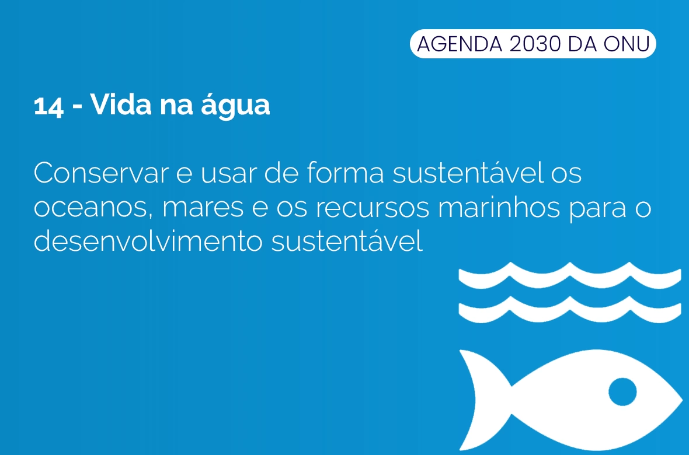
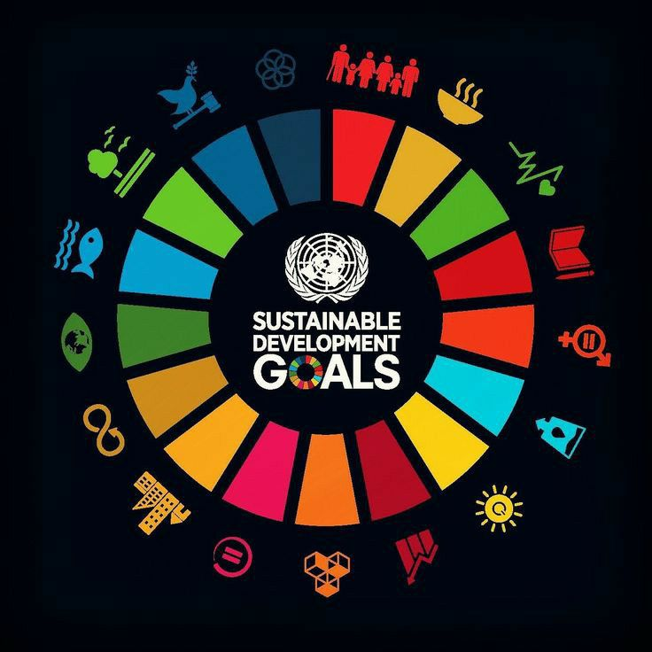
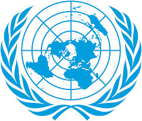

OBJETIVO DE DESENVOLVIMENTO SUSTENTÁVEL 14: VIDA NA ÁGUA.

ODS-14: VIDA NA ÁGUA.
O Objetivo de Desenvolvimento Sustentável de número 14 refere-se aos oceanos e a vida dos animais marinhos.
Essa ODS é sobre a conservação e uso sustentável dos oceanos, dos mares e dos recursos marinhos para o
desenvolvimento sustentável. Foi nos oceanos que surgiu a primeira vida na Terra e, desde então, não
paramos um minuto de depender dos seus recursos. Chuvas, água potável, clima, corais, alimentos e
inclusive o oxigênio: tudo é fornecido ou regulado pelo grande ecossistema marinho. Com os alarmantes
avanços do aquecimento global, os oceanos tornaram-se os principais alvos das mudanças climáticas e
passaram a sentir de perto seus impactos ambientais. Este ano alcançamos a maior temperatura já
registrada nos oceanos, que está 0,075°C acima da média do contabilizado entre 1981 a 2010. O
aumento, que pode parecer pequeno, corresponde na realidade à energia liberada por 3,6 bilhões de
bombas de Hiroshima. O motivo para esse aumento? A ação humana. Segundo cientistas, 90% de todo o calor
gerado pelos gases de efeito estufa desde 1970 foi parar no oceano, enquanto apenas 4% no mesmo período
foi para a atmosfera. ODS 14- Vida na água tem como objetivo “conservar e garantir o uso sustentável dos
oceanos, dos mares e dos recursos marinhos“, assim dando a devida importância à preservação a esse
ecossistema.
QUAIS OS PASSOS PARA CAMINHARMOS EM DIREÇÃO AO CUMPRIMENTO DA ODS 14?

Indicador de “Porcentagem de resíduos sólidos da cidade reciclados”: os dados coletados pelo indicador revelam a capacidade do município de manipular e tratar adequadamente seu lixo para evitar danos ao ecossistema, como o eventual despejo nos oceanos. Assim, gestores conseguem criar políticas mais precisas para alcançar a meta 14.1 do ODS 14: “Até 2025, prevenir e reduzir significativamente a poluição marinha de todos os tipos, especialmente a advinda de atividades terrestres, incluindo detritos marinhos e a poluição por nutrientes“;
Indicadores de “Porcentagem de moradias com acesso a um sistema de esgoto” e “Porcentagem de esgoto que não recebe tratamento”: os indicadores apontam a proporção de famílias em determinada cidade com acesso ou não aos serviços de saneamento. Com esses dados, municípios conseguem avaliar com maior precisão se seus moradores estão despejando em mares seus resíduos, impedindo que a cidade atinja a meta 14.1 do ODS 14: “Até 2025, prevenir e reduzir significativamente a poluição marinha de todos os tipos, especialmente a advinda de atividades terrestres, incluindo detritos marinhos e a poluição por nutrientes“;
Indicador de “Percentual total de energia derivada de fontes renováveis”: sabemos que o aquecimento global está diretamente associado à saúde dos oceanos. Por isso, evitar a queima de combustíveis fósseis e apostar em energias mais limpas é necessário para atingir a meta 14.3 do ODS 14: “Minimizar e enfrentar os impactos da acidificação dos oceanos, inclusive por meio do reforço da cooperação científica em todos os níveis“.
Metas e indicadores.

A ONU definiu 10 metas e 10 indicadores para o ODS 14 que incluem prevenção e redução da poluição
marinha e da acidificação dos oceanos, proteção dos ecossistemas marinhos e costeiros e regulamentação
da pesca. As metas também exigem um aumento do conhecimento científico sobre os oceanos. Algumas metas
têm como meta o ano de 2020, algumas o ano de 2025 e outras não têm ano final.
Quais são as 10 metas?
Meta 14.1: Reduzir a poluição marinha.
Meta 14.2: Proteger e restaurar ecossistemas.
Meta 14.3: Reduzir a acidificação do oceano.
Meta 14.4: Pesca sustentável.
Meta 14.5: Conservar as áreas costeiras e marinhas.
Meta 14.6: Acabar com os subsídios que contribuem para a sobrepesca.
Meta 14.7: Aumentar os benefícios económicos do uso sustentável dos recursos marinhos.
Meta 14.a: Aumentar o conhecimento científico, pesquisa e tecnologia para a saúde dos oceanos.
Meta 14.b: Apoiar pesca de pequena escala.
Meta 14.c: Implementar e fazer cumprir a lei marítima internacional.
Monitoramento e progresso.
Um relatório anual é preparado pelo Secretário-Geral das Nações Unidas avaliando o progresso em
direção aos Objetivos de Desenvolvimento Sustentável. A Reunião Preparatória para a Conferência
do Oceano da ONU foi realizada em Nova Iorque, EUA, em fevereiro de 2017, para discutir a implementação
do Objetivo de Desenvolvimento Sustentável 14. O direito internacional, conforme refletido na Convenção
das Nações Unidas sobre o Direito do Mar (UNCLOS), enfatizou a necessidade de incluir instrumentos de
governança para considerar as “atividades antropogênicas que ocorrem fora do oceano”. As preocupações
com a saúde dos oceanos em práticas de pesca destrutivas e poluição marinha foram discutidas, olhando
para o papel das comunidades locais de pequenos Estados insulares em desenvolvimento (SIDS) e países
menos desenvolvidos (LDCs) para não esquecer que os oceanos são uma grande parte de suas economias.
Qual a conexão da ODS-14 com as outras ODS'S?
A ação climática ( ODS 13 ) é usada como uma forma de proteger os oceanos do mundo. O aumento dos níveis
de gases de efeito estufa, levando a mudanças no clima, afeta negativamente os oceanos do mundo e as
comunidades costeiras marinhas. Os impactos resultantes da elevação do nível do mar em 20 centímetr
os desde o início do século 20 e do aumento da acidez dos oceanos em 30% desde a Revolução Industrial
contribuíram para o derretimento das camadas de gelo por meio da expansão térmica da água do mar. Os
impactos do clima nos serviços do ecossistema marinho relacionados às indústrias primárias que
fornecem alimentos, renda e meios de subsistência para as pessoas têm implicações diretas para uma
série de ODS. Esses ODSs incluem 'sem pobreza' (ODS 1), 'fome zero' (ODS 2), 'trabalho decente e
crescimento econômico' (ODS 8), 'redução das desigualdades' (ODS 10) e 'consumo e produção
responsáveis' (ODS 12).